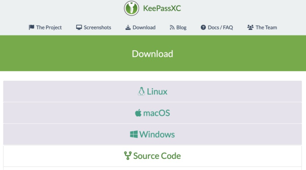
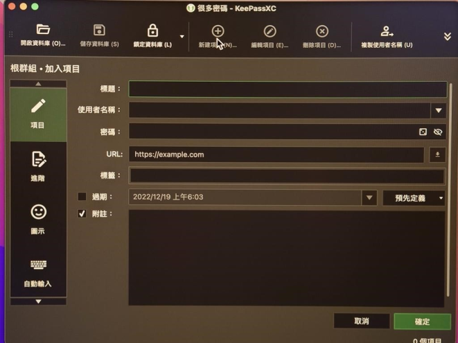
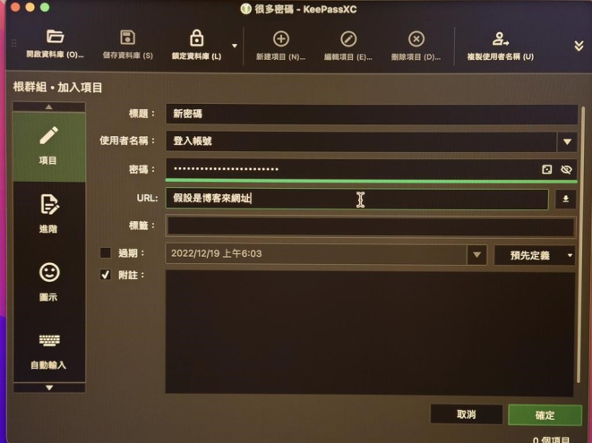

一次保管所有的密碼：KeePassXC 密碼管理器
又忘記密碼了？還在每個社交帳號、購物網站、遊戲裡面使用同一個密碼？有重要資料放在不同的雲端硬碟帳號？
在數位時代生活，密碼就如同鑰匙，保障每個人的社交帳號、購物記錄、遊戲資料。但也同時是駭客覬覦的重要目標，只要取得密碼，就能夠冒用身份、盜刷財務、竊取遊戲內的虛擬寶物（如果是線上遊戲的話），對生活造成大大小小的損害。
何況，身為捍衛人權的公民團體，電子郵件信箱、會議文件、捐款者資料，皆是組織的重要資產。如果帳號密碼為駭客所知，那恐怕就不只有一個人的生活遭殃，有可能導致組織名譽受損、重要的行動資訊洩露，甚至被極權國家鎖定人身資訊，有生命威脅之虞。
密碼管理器 KeePassXC 源自開放原始碼軟體改良而成，而且 KeePassXC 與市面上販售的商業密碼管理器不同，是由網路社群的志願工程師集體開發與維護，它不僅免費提供所有人使用，也更不會因為營利考量而對保護功能打折。其預設只在你所擁有的電腦裝置裡面進行密碼管理，完全由你掌握位置。更可以確保密碼檔案不會因為保管在商業公司經營伺服器上面，而導致潛在的洩露，或是因為網路斷線而無法同步下載使用的危險。
使用上，如同其他密碼管理器，KeePassXC 可以幫助你保管所有帳號的不同密碼，也可以幫你亂數產生更難破解的密碼，讓你得以不再使用同一個帳號密碼註冊所有服務，確保每一次密碼外洩的事件不會讓你全盤皆失。
使用情境
- 密碼真的又多又雜
- 無法自己記住每一個密碼，直接交給管理器更簡單
- 打開管理器並輸入主要密碼解鎖資料庫
- 點選你要登入的帳號
- 右鍵後，選擇複製密碼
- 在需要登入的頁面貼上密碼
- 關閉管理器
- 取代瀏覽器內建密碼管理器
人權團體經常會在工作中，因為處理人民受到不當損害、被政府或財團威脅的事件，而組織成員或是事件當事人經常成為駭客的攻擊目標。假使駭客能取得目標的帳號密碼，就有機會竊取人身安全資料、冒用身份欺騙更多人。
如果使用者在工作內、外都使用同樣或相似的帳號密碼，那很可能會在商業服務外洩事件波及了組織內的帳號密碼，進而導致前述的危險發生。
為了保障基本的帳號使用安全，大多數人都知道要設定複雜的密碼、經常更換密碼、不要四處使用同一個密碼，但實際執行方面極其困難。畢竟每想一套複雜的密碼都要時間與心力去記憶，而且也不見得能夠及時更換所有帳號的密碼，更遑論確保自己知道每個不同帳號使用哪些不同的密碼。這些密碼管理的成本經常會隨著工作內容的敏感程度，而隨之劇增。
人的記憶力有限，對於複雜的密碼更有限。大多數的人都會在不同的網路服務、帳號使用同樣或相似的密碼，以確保自己不會遺失帳號。然而，使用相同的密碼意味著一旦某一個網路服務商被竊取資料，進而導致其他惡意人士可以在取得其中一次外洩的密碼，就可以盜取你所有不同服務的帳號。
例如 Have I Been Pwned 或 Firefox Monitor 每個一段時間就發布某些知名服務外洩事故，範圍包含雲端硬碟 Dropxob、健身服務、線上設計軟體 Canva 的帳號密碼。只要你使用過遭駭的其中一種服務，其它帳號也可能會隨之遭殃、擴大損害範圍。
密碼管理器的功能可以說是為此而生，將複雜的思考與記憶工作交給軟體，自己只要負責一套最關鍵的主要密碼（也可以再加上雙重驗證），就可以完成這項艱巨的任務。
具體而言，密碼管理器可以協助你從圖左的一個大腦記憶不同帳密的情形，改善到只需要記得一組管理器本身的入口主要密碼，再由管理器告訴你哪些帳號分別對應到哪些密碼。每當你需要輸入登入時，只要五個步驟即可：
本文要介紹的密碼管理器 KeePassXC，是來自開放原始碼軟體 KeePass 家族的一員，這代表它的程式碼是透明、為任何人所知並且可供檢驗的，降低它具有惡意功能竊取資料的可能。它可以在市面上絕大多數的電腦作業系統 Windows、蘋果作業系統 MacOS、或開源作業系統 Linux 跨平台使用，甚至也可以跟 Android 與 iOS 的手機或平板合作，協助你做到跨裝置的密碼管理。
雖然現在的瀏覽器多半具有自動紀錄並填入使用者帳號、密碼、地址、金融資訊的功能，在登入或購物結帳時，可以省去很多記憶與輸入的時間。但在前面介紹瀏覽器的文章裡面，我們有提過「不要將密碼交給瀏覽器」，因為瀏覽器本身承載了很多使用者的網路瀏覽紀錄、使用習慣，已經是相當容易被駭客盯上的目標。
如同將不同功能的事情、交給不同瀏覽器處理的分隔原則，本文也建議只將密碼交給獨立運作的密碼管理器，避免與瀏覽器的直接關聯，減少雞蛋集中在籃子裡的風險。這雖然會減損一點便利，但是 KeepassXC 已經提供直接複製帳號名稱、密碼的功能，使用者還是可以省去大量輸入帳密的時間。
使用方式
如果你是個密碼很多的人，那也許你曾經考慮將所有密碼都寫在同一張紙上、鎖在櫃子裡，但因為這很不方便，而且要是紙張遺失會不堪設想，因此作罷。
現在，有人解決你的煩惱了。KeePassXC 裡面的密碼庫，其實就是一張記載密碼的清單，只是它透過密碼管理器嚴格加密。只要你使用主要密碼解鎖之後，就可以看到你已存的各類服務帳密資訊。
而且，KeePassXC 是已經繁體中文化的軟體，使用者可以輕易上手。初次設定完成後，以後只需要在主要頁面輸入主要密碼，就可以透過一張清單管理所有的密碼。而且沒腦想強密碼也沒關係，KeePassXC 可以協助你用亂數產生不一樣、足夠複雜的密碼，輕鬆讓你所有帳號都使用不同的密碼還不用腦記，未來也可以隨時新增或管理。
無論如何，千萬記得要記得主要密碼，並且保管好電腦裡的密碼庫檔案（也就是 .kdbx 檔）。你可以在不同地方備份它，或是使用前文提及的 Android 或 iOS 版本的 KeePass 家族成員來開啟它。一旦忘記主要密碼，或遺失了資料庫檔案，你的諸多密碼就會消失，戒之慎之！
下載/安裝流程
在電腦安裝
切記，下載工具程式務必要從官方網站下載，以避免下載到來路不明、被暗藏後門的軟體。KeePassXC 的官方網站是 https://keepassxc.org/ ，在首頁就可以看見下載的連結，選擇你的電腦作業系統下載即可。記得，KeePassXC 與其它商業密碼管理器不同，是免費提供下載的，如果你發現要註冊、付費，那就肯定搞錯軟體了。
下載後，就可以直接點擊安裝檔案、按照軟體提示的順序進行。安裝完成後，就可以著手進入使用環節。
在手機或平板安裝
如果你想安裝 Android 或 iOS （蘋果）的版本，它們跟電腦版本的名稱不一樣。官方網站的指引 https://keepassxc.org/docs/建議在 Android 使用 KeePassDXand KeePass2Android，在 iOS 則是 Strongboxand KeePassium。他們都是 KeePass 家族的成員，所以可以互通使用，管理密碼的方式也相近。但是本文後續以介紹電腦裝置上面的 KeePassXC 為主。
首次設定
KeePassXC 的運作方式是，經由這個軟體產生一個加密的文件檔案，稱為資料庫（副檔名會是 .kdbx），只能由使用者設定的主要密碼解鎖。當你首次打開它，軟體會詢問你是否「建立新資料庫」或是「開啟現有資料庫」，或是從其它的密碼管理器匯入資料庫。如果你是第一次使用、還未存入任何帳密，或是要設定另外一組帳密儲存，以下為「建立新資料庫」的流程：
- 為新的密碼資料庫命名，可以加上描述，以免自己遺忘內容
- 為這個資料庫提高加密層級，這可以阻礙有人將資料庫檔案盜走後的解密工作，提高他們需要解鎖的時間成本
- 為這個資料庫設定主要密碼，可以說是最重要的事情，如果遺忘主要密碼，裡面的東西就再也無法取出


開始使用
當你每次打開 KeePassXC ，你就需要使用主要密碼對資料庫解鎖。解鎖之後，可以進行以下動作：
- 首頁裏頭條列各個帳號的管理項目，點擊要尋找密碼的帳號，就可以觀看或準備複製貼上密碼
-
如果要新增某個網站或服務的帳號密碼，就要到工具列「新建項目」：
- 輸入標題（例如某購物網站）
- 使用者名稱（也就是你在該服務註冊的帳號）之後，
- 產生新的密碼。可以自行輸入，也可以隨機產生 
- 也是在工具列「編輯項目」：更改項目的標題、使用者名稱、修改密碼
- 最後則是工具列的「刪除項目」：可以將所選的項目刪去
-
如果需要修改 KeePassXC 的設定，可以到工具列的最後一個「設定」進行：
- 例如在「通用」的地方可以設定開機後可以啟動管理器
- 或是在「安全」的地方設定複製密碼之後自動消除的時間，可以避免使用者不小心在公開的聊天訊息貼上自己的密碼。
- 想在瀏覽器裡面直接連結密碼管理器，可以到「瀏覽器整合」為 Firefox, Google Chrome, Brave, Edge 等等主流的瀏覽器下載並安裝外掛。這可以讓你直接在瀏覽器裡面複製貼上密碼。

當你使用過前述 1~4 的步驟，就已經掌握密碼管理器的主要功能，可以讓你的生活及工作更輕鬆也更安全。
在新電腦或是其他裝置上設定
- 換了新的電腦，要繼續用 KeePassXC，就要記得搬遷資料庫到新電腦裡面，也就是那個副檔名為 .kdbx 的檔案。
- 在新的電腦安裝 KeePassXC 之後，在初次開啟時選擇「開啟現有資料庫」。
- 輸入你原先為這個資料庫設定的主要密碼，即可開啟使用。
技術支援/求救方法
如果你希望再加一道主要密碼以外的保護措施，確保即使你的整台電腦被盜走，也沒有機會開啟密碼資料庫。那麼可以考慮使用 YubiKey 這樣的物理保護措施當作第二層鎖（也就是「二階段驗證」的概念），它就如同實體的鑰匙一樣，外型跟一個 USB 隨身碟長得很像，只能在實體插入、手動接上電腦時候解鎖打開 KeepassXC 密碼庫。但使用者必須自行負擔另外購買這個裝置的價格，而且遺失裝置的話，就會沒有任何機會打開密碼庫了。
KeePassXC 有相當多樣的功能，甚至可以跨裝置到手機、平板共用，網路上已經有相關的教學，例如 開源密碼管理軟體：KeePass 或 KeePassXC 免費密碼管理軟體圖解教學，信用卡、瀏覽器、手機都能快速輸入 ，於此不再贅述。不過，跨裝置使用代表你要四處搬遷密碼資料庫，甚至將資料庫上傳到雲端硬碟空間。如果你會擔心搬遷過程遺失、出現無法預料的問題，或是存放的網路空間遭竊，請慎選跨平台的功能。
如果對本文的介紹有任何疑義，可以閱讀我們以前寫過的 如何：使用 KeePassXC | 監控自我防衛 ，或是聯繫 hi@ocf.tw 開放文化基金會詢問。